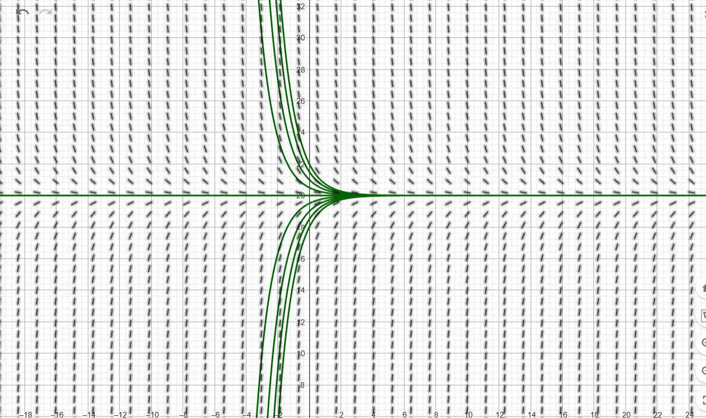

Enunciado 1: Difusión de calor
Campo de direcciones para el modelo de difusión de calor según la Ley de Enfriamiento de Newton, evaluando comportamientos para valores de \( C \) desde \( -2 \) a \( 2 \):
$$ \frac{dT}{dt} = -k(T - T_{amb}) $$
Donde \( T \) es la temperatura del cuerpo, \( T_{amb} \) la temperatura ambiente y \( k \) la constante de enfriamiento.
